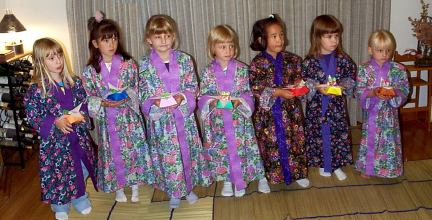
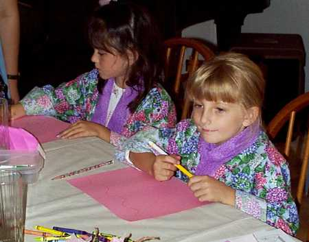
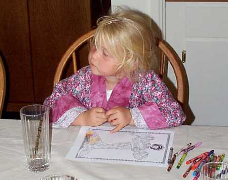
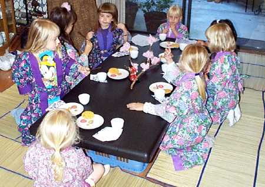

|
While visiting family in Tennessee, Ellen got book on tea parties, and talked Laura into hosting a Japanese tea party, which was held in September. About seven of Ellen's friends attended. |
|
 Laura made kimonos for all the girls. (When we took this photo, Michelle was hiding upstairs, because her dad was there to take her home!) |
|
 Norissa and Kelly starting on paper fan-making. |
|
 Here's Michelle, coloring her kimono lady. |
|
 Well, it turns out Kool-Aid was more popular than green tea! |